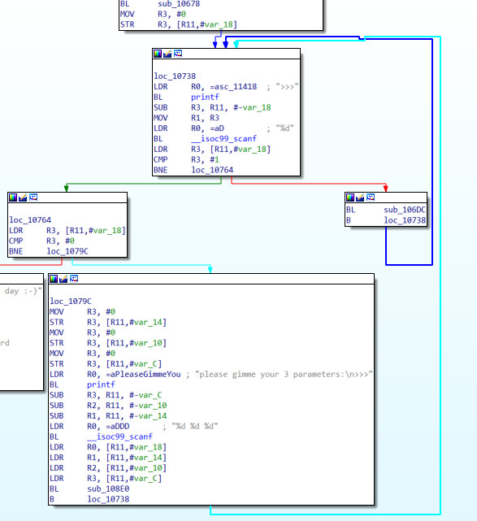
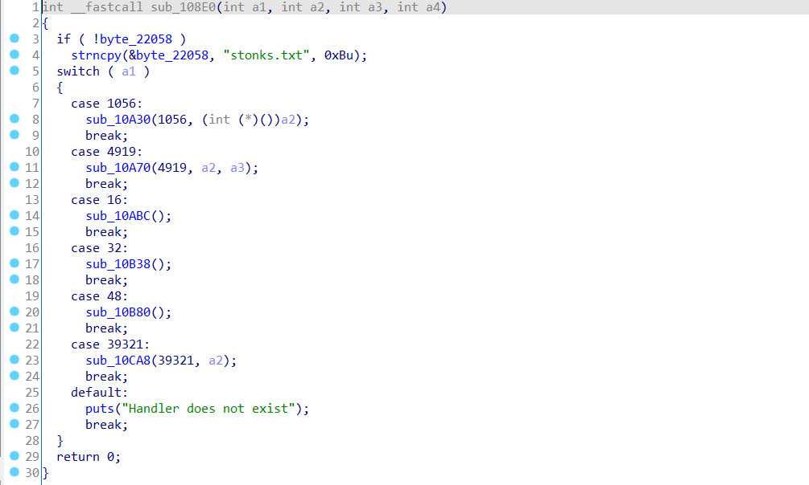

using decompiler and take a deep look at functions.

after enter the correct command and enter three variable, it will jump to function at 108e0, 108e0 contains a switch that call different function depending on the command user enter.

notice that string "stonks.txt" are stored in the byte_22058, and with commmand 48, function sub_10B80 will read byte_22058 as a filename, and print out whether in the file.
so, we got an idea that if we need get the flag, we need to change byte_22058 to "flag.txt" instead of "stonks.txt"
looking at other commands, command 1056 allow us pass a integer as a pointer to an function (lets say funcA).
and with command 4619, we have call funcA with our 1st and 2nd parameter.
so, here is the question. Is there any function that take 2 pointer parameter and can modify a string.
the answer is plt:00010570 __isoc99_scanf, we can use scanf("%s",char* str) to read input from stdin and write str.
in this case, str is the address of byte_22058, and "%s" can also found in the data section.
therefore, we have the process of getting the flag.
use 1056: change function address to scanf
use 4619: call scanf and write flag.txt to byte_22058
use 48: print out the file content in filename(byte_22058)
#!/usr/bin/env python3 # -*- coding: utf-8 -*- # This exploit template was generated via: # $ pwn template '--host=flu.xxx' '--port=20040' challenge.elf from pwn import *
# Set up pwntools for the correct architecture exe = context.binary = ELF('challenge.elf')
# Many built-in settings can be controlled on the command-line and show up # in "args". For example, to dump all data sent/received, and disable ASLR # for all created processes... # ./exploit.py DEBUG NOASLR # ./exploit.py GDB HOST=example.com PORT=4141 host = args.HOST or 'flu.xxx' port = int(args.PORT or 20040)
def start_remote(argv=[], *a, **kw): '''Connect to the process on the remote host''' io = connect(host, port) if args.GDB: gdb.attach(io, gdbscript=gdbscript) return io
def start(argv=[], *a, **kw): '''Start the exploit against the target.''' if args.LOCAL: return start_local(argv, *a, **kw) else: return start_remote(argv, *a, **kw)
# Specify your GDB script here for debugging # GDB will be launched if the exploit is run via e.g. # ./exploit.py GDB gdbscript = ''' tbreak *0x{exe.entry:x} continue '''.format(**locals())
#=========================================================== # EXPLOIT GOES HERE #=========================================================== # Arch: arm-32-little # RELRO: Partial RELRO # Stack: Canary found # NX: NX enabled # PIE: No PIE (0x10000)